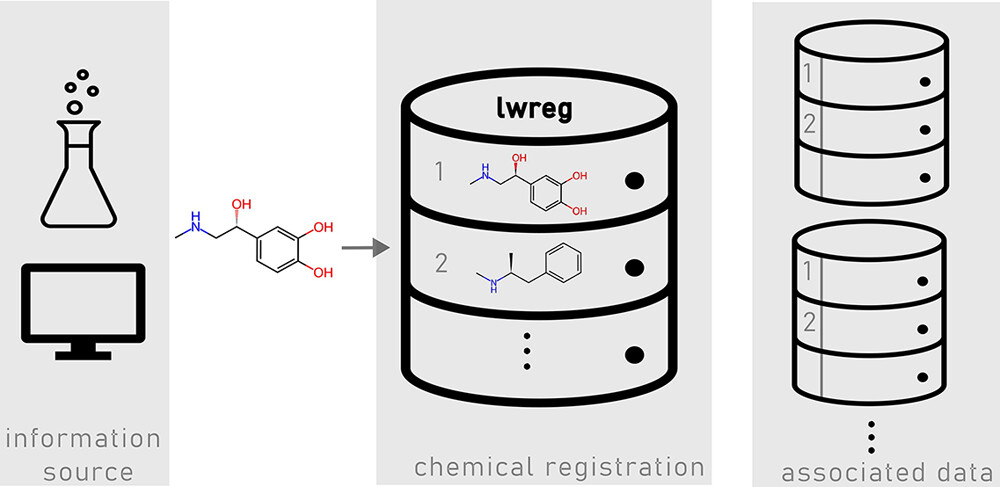
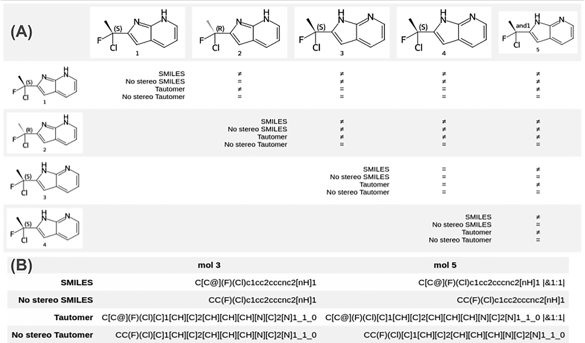

lwreg: A Lightweight System for Chemical Registration and Data Storage (Landrum et al. 2024)

Why did I choose this paper?
- I have been interested in structure registration/standardisation systems for quite a while now
- In the open source realm, there are not many systems you can use, primarily the ChEMBL curation pipeline (Bento et al. 2020)
- We had an early encounter with lwreg at IWOMI 2023 (which is also acknowledged in the paper)
General
- Authors:
- Affiliation of all authors: ETH Zurich, Department of Chemistry and Applied Biosciences, Computational Chemistry research group
- Group website: https://riniker.ethz.ch
- Gregory A. Landrum* (Senior scientist, also founder and main maintainer of RDKit open-source cheminformatics toolkit)
- Jessica Braun*
- Paul Katzberger
- Marc T. Lehner
- Sereina Riniker
- * G.L. and J.B. contributed equally to this work.
- Journal:
- Notes:
- lwreg: LeightWeight chemical REGistration system
- GitHub repository: https://github.com/rinikerlab/lightweight-registration
Abstract
- lwreg: a lightweight, yet flexible chemical registration system
- captures 2D structures (topologies) and 3D conformers of molecules
- open-source
- Python API (and CLI)
- extendable to also store experimental data and metadata with link to registered structures
- installable directly from GitHub repository: https://github.com/rinikerlab/lightweight-registration
Introduction
- definition of chemical registration system in this context: “a database (or other software system) that stores chemical structures together with assigned identifiers”
- minimal functionality:
- check whether a compound is already registered
- if yes, return its identifier
- if no, register the new compound
- return the associated structure when given an identifier
- less common in academia than in industry
- rare in computational groups/labs
- due to cultural/social factors
- due to technical and scientific challenges
- most registration systems are GUI applications not optimised for computational workflows (e.g. no programmatic access via an API or no bulk submissions)
- biggest scientific challenge: context dependency of “are these two compounds the same?” (conformers, stereochemistry, tautomers, charged states, counter-ions, etc.)
- use cases for compound registration systems in computational groups:
- tracking compounds that were investigated and maybe shared with (experimental) collaborators
- tracking training/testing/validation sets for ML models
- tracking already executed experiments like MD simulations, QM calculations, costly descriptor calculations, etc.
- lwreg
- open-source, highly flexible compound registration system
- allows different definitions of chemical identity
- supports integration of experimental results
- focus on computational use cases
- accessible via Python API or CLI
- no GUI
Methods
- Implementation and Interface
- pure Python
- limited number of external dependencies other than the RDKit
- installation via conda with the supplied environment.yml file
- primary operations:
- register: register a new compound or a bulk of compounds via bulk_register; generate registration ID, called molregno
- query: determine whether a given structure is already registered and if yes, return its molregno; configurable to query all stereochem variants / tautomers / etc.
- retrieve: give a molregno or multiple and retrieve associated structure; optional: retrieve structure prestandardisation or its hashes
- Filtering and Standardizing Compounds
- commonly, structure registration systems perform standardisation and filtering at registration
- standardisation: e.g. remove counter-ions and solvents, transform functional groups into standard forms, etc.
- filtering: e.g. flag/reject structures with overlapping atoms, certain elements or functional groups, unspecified or incorrect stereochem, etc.
- lwreg
- some built-in standardisation options, e.g.
- RDKit sanitization (https://www.rdkit.org/docs/RDKit_Book.html#molecular-sanitization)
- fragment removal (counter-ions, solvents)
- neutralization
- some built-in filtering options, e.g.
- check for overlapping atoms
- check for polymer definitions and other annotations (SGroups)
- flexible and configurable interface for adding custom standardisation/filtering routines, e.g. (taken from standardization_lib.py)
class RDKitSanitize(Standardization): name = "rdkit_sanitize" explanation = "runs the standard RDKit sanitization on the molecule" def __call__(self, mol): try: Chem.SanitizeMol(mol) except: return None return mol
- some built-in standardisation options, e.g.
- commonly, structure registration systems perform standardisation and filtering at registration
- Recognizing Duplicate Compounds
- each molecule in the database is assigned a registration hash
- to check whether a structure is already registered, its hash is generated and checked against the database structure hashes using string matching
- Registration Hash
- lwreg uses RDKit’s RegistrationHash function to generate its registration hash codes (RDKit UGM 2022 presentation slides)
- generated hash has multiple layers to be able to assess molecular similarity on different levels, assessing different structural traits
- layers:
- FORMULA: molecular formula
- CANONICAL_SMILES: canonical CXSMILES with stereochemistry information (including support for “enhanced stereochemistry”, see slides linked above, e.g. definition of enantiomers/racemates)
- TAUTOMER_HASH: tautomer-agnostic structure line notation (HetAtomTautomer hash) with stereochemistry information, developed as part of the MolHash software by NextMove Software (GitHub repo, ACS Fall 2019 presentation)
- NO_STEREO_SMILES: canonical CXSMILES without stereochemistry information
- NO_STEREO_TAUTOMER_HASH: HetAtomTautomer hash without stereochemistry information
- SGROUP_DATA: canonicalised form of some of the molecule’s SGroup data (if any, configurable)
- ESCAPE: free-text field (basically allows you to use your own registration hash or add custom information you consider relevant)
- layers 1-5 generated using RDKit’s implementation of MolHash
- final registration hash generated by computing an SHA1 hash from all of these layers via Python’s hashlib library

- Why Not InChI?
- also provides a multi-layer hash that could be used for identity determination
- but(!) InChI standardises input structures (e.g. to standard tautomers)
- this way, more control over standardisation and hashing details
- Querying Using Hash Layers
- default query behaviour of lwreg: standardise query molecule, generate its default registration hash, use it to query the table of registration hashes, return molregno of matching record or none
- can be specified which layer to use, to e.g. query for all stereoisomers, tautomers, etc.
- Retrieving Structures
- Structures are retrieved by giving molregnos
- Structures are returned as v3000 MOL blocks
- possible to retrieve standardised structure or “as registered” form of the structure
- possible to retrieve all mol hashes
- Storing Conformers
- special “registerConformers” mode can be set in the system
- conformers of an existing record/structure are stored under its molregno and are each assigned a conf_id related to that molregno (so only fully defined by tuple (molregno, conf_id))
- conformers are also hashed using a simple scheme that arranges the atom coordinates in a defined order, concatenates them, and hashes the result (details in paper)
- this scheme is independent of the atom ordering but neither translationally nor rotationally invariant (must be standardised at registration if necessary)
- Storing Experimental Data
- SQL-based database managed by lwreg can be extended with additional tables to store experimental data with relations to the registered molecules
- See Jupyter Notebook demos in the GitHub repository
- general recommendation would be to store experimental data/results and metadata in separate tables, with UUIDs to identify experiments
- Adding Chemical Search: Integration With the RDKit Cartridges
- No similarity or substructure search functions in lwreg
- Would be possible to add externally via the RDKit PostgreSQL cartridge or the chemicalite cartridge for sqlite
Results and Discussion
- performed several benchmarks (performance snapshots)
- executed lwreg commands on a two-year old workstation (3.8 GHz Intel Xeon W-1270P CPU, 64 GB RAM, Ubuntu 22.04)
- database was a PostgresSQL v14 installation running on an eight-year-old workstation (3.5 GHz Intel Xeon E3−1240 CPU, 32 GB RAM, Ubuntu 22.04.)
- Registering All Compounds From ChEMBL33
- RDKit sanitization for standardisation
- 2.3 mio molecules in final database
- total runtime of registration: 17.5 h (26 ms per molecule avg.)
- 7.4 GB of disk space required (1 GB molecule hashes, 3 GB original mol blocks, 3.4 GB for mol blocks table)
- median query time of the database was 5.6 ms (maximum 274 ms)
- Storing DASH Tree Conformers
- took the data from (Lehner et al. 2023), 365,419 molecules and 1,027,559 conformers, and built a database with lwreg
- conformer table occupied 3.5 GB of disk space
- molecule registration data only 1.3 GB
- registering and retrieving conformers took about the same time as for the ChEMBL structures (more details in paper)
- Storing Molecular Data Sets for Bioactivity Prediction and Associated Machine-Learning Results
- details in the Jupyter Notebook tutorials
Conclusions
- summary of the paper, highlighting the layered hash, the good performance, and the extendability of the underlying database
- lwreg does not have a GUI but can be a solid (backend) for one in the future
- invite the community to the issues and discussions sections of the GitHub repository
Personal comments / questions to discuss
- is there a technical reason for why there is no pypi package or sth similar? Installation currently only possible from the GitHub repo
- is there a certain order to the registration hash layers? The FORMULA layer is very unspecified while the CANONICAL_SMILES layer is very defined
References
Bento, A. Patrícia, Anne Hersey, Eloy Félix, Greg Landrum, Anna Gaulton, Francis Atkinson, Louisa J. Bellis, Marleen De Veij, and Andrew R. Leach. 2020. “An Open Source Chemical Structure Curation Pipeline Using RDKit.” Journal of Cheminformatics 12 (1): 51. https://doi.org/10.1186/s13321-020-00456-1.
Guo, Jeff, and Philippe Schwaller. 2024. “It Takes Two to Tango: Directly Optimizing for Constrained Synthesizability in Generative Molecular Design.” arXiv. https://doi.org/10.48550/ARXIV.2410.11527.
Landrum, Gregory A., Jessica Braun, Paul Katzberger, Marc T. Lehner, and Sereina Riniker. 2024. “Lwreg: A Lightweight System for Chemical Registration and Data Storage.” Journal of Chemical Information and Modeling 64 (16): 6247–52. https://doi.org/10.1021/acs.jcim.4c01133.
Lehner, Marc T., Paul Katzberger, Niels Maeder, Carl C. G. Schiebroek, Jakob Teetz, Gregory A. Landrum, and Sereina Riniker. 2023. “DASH: Dynamic Attention-Based Substructure Hierarchy for Partial Charge Assignment.” Journal of Chemical Information and Modeling 63 (19): 6014–28. https://doi.org/10.1021/acs.jcim.3c00800.
Orsi, Markus, and Jean-Louis Reymond. 2024. “One Chiral Fingerprint to Find Them All.” Journal of Cheminformatics 16 (1): 53.